PMC - CCTV SURVEILLANCE SYSTEM (AI BASED) - PUNE Parliamentary Constituency
AI Video Analytics & Hardware Infrastructure
Capabilities, Examples & Demonstrations
A standardized technical showcase and engineering framework for city-wide surveillance operations across the Pune Parliamentary Constituency, integrating 11 Foundational Doctrines, 28 AI Video Analytics algorithms, and 26 Hardware Infrastructure Nodes.
CORE PRINCIPLES
Strategic, operational, and lifecycle doctrines governing city-wide public surveillance deployment, stakeholder alignment, and police technical ownership.
AI VIDEO ANALYTICS
Automated video intelligence extraction converting raw video pixels into actionable alarms and searchable metadata across 7 tactical surveillance categories.
HARDWARE COMPONENTS
Standardized cameras, audio sensors, core distribution switching, edge wireless, VMS compute, and high-availability enterprise storage nodes.
TECHNICAL INTRODUCTION
11 Core Principles Governing Pune Surveillance Architecture
Establishing the strategic, operational, and architectural principles governing city-wide surveillance deployment across the Pune Parliamentary Constituency. Moving beyond passive hardware installation toward a sustainable, intelligence-driven public safety lifecycle.
WHAT IS CITY SURVEILLANCE?
City surveillance is a coordinated system of cameras, communications networks, recording infrastructure, software and analytics used to provide authorities with continuous situational awareness across public spaces, roads, junctions and other critical locations.
An ideal city surveillance system should move beyond passive video recording toward live monitoring, intelligent video analytics, rapid incident awareness and searchable video intelligence, while remaining reliable, secure, maintainable and adaptable to future technologies.
THE POLICE DEPARTMENT AS THE PRIMARY END USER
The Police Department is the primary operational user of a city-wide CCTV surveillance system.
Its requirements should therefore form the foundation of system design, including camera coverage, operational visibility, incident response, video retention, analytics, alerting, investigation workflows, reliability and security.
The system should be designed around how police personnel use surveillance information in day-to-day operations, emergency response and investigation.
POLICE + MUNICIPAL CORPORATION
A city surveillance system is both public infrastructure and operational policing infrastructure.
Municipal authorities may provide funding, locations, civil infrastructure and administrative support. The Police Department provides operational requirements, deployment priorities and long-term technical direction.
The two should therefore work together through a clearly defined surveillance framework.
DESIGN FOR THE FUTURE
CCTV infrastructure should not be designed only for today's technology.
Every deployment should aim for: BACKWARDS COMPATIBILITY + FUTURE INTEGRATION
Existing infrastructure should remain usable wherever technically feasible, while improved cameras, AI analytics, storage, networking and cybersecurity technologies can be introduced over the lifecycle.
The objective is a technology lifecycle, not a one-time installation.
HARDWARE + SOFTWARE + AI
A modern surveillance system is not just cameras, NVRs, servers and switches.
It is an ecosystem comprising: HARDWARE + SOFTWARE + AI ANALYTICS + NETWORKING + CYBERSECURITY + MAINTENANCE
Hardware and software/platform OEMs should therefore be considered together during system planning.
CONTINUOUS MAINTENANCE
A system being operational does not mean it is permanently healthy.
A recurring weekly system health review should consider: camera health, recording/storage, network health, security advisories, firmware/software review, analytics, configuration, preventive maintenance.
Updates should be introduced through controlled testing and approval.
POLICE TECHNICAL OWNERSHIP
Long-term operation should have clearly identified technical ownership within the Police Department.
A designated police technical team should coordinate: MONITORING → MAINTENANCE → UPGRADES → CYBERSECURITY → OEM COORDINATION → FUTURE INTEGRATIONS
Operational knowledge should remain with the end user.
THE SYSTEM INTEGRATOR
The system integrator should be more than an equipment installer.
The role connects: POLICE REQUIREMENTS + MUNICIPAL INFRASTRUCTURE + HARDWARE + SOFTWARE + AI + NETWORKING + CYBERSECURITY + MAINTENANCE
The integrator's role is to bring these elements together into one coherent, maintainable and future-ready surveillance ecosystem.
AI VIDEO ANALYTICS
"Automated video intelligence extraction that converts raw video pixels into actionable alarms and searchable metadata."
AI Analytics extracts intelligence and metadata from visual streams.
Cybersecurity protects the cameras, networks, servers, software and data.
Do not confuse the two.
LONG-TERM OBJECTIVE
The objective is not simply to install more cameras.
The objective is a system that is: RELIABLE, SECURE, MAINTAINABLE, INTEROPERABLE, BACKWARDS COMPATIBLE, FUTURE-READY, AI-ENABLED
OUR POSITION AS SYSTEM INTEGRATORS
When police requirements, municipal infrastructure, OEM technology, AI, cybersecurity and maintenance are planned together, the system can deliver greater long-term value.
OUR APPROACH: BUILD • INTEGRATE • MAINTAIN • UPGRADE • EVOLVE
"Build a surveillance ecosystem that can evolve with the city's requirements and technology."
AI Video Analytics
28 Verified Video Intelligence Capabilities
Real-time computer vision capabilities for active situational awareness, perimeter protection, crowd monitoring, and automated incident alerting.
Face Detection
“Detects and pinpoints the presence and location of human faces in a camera's field of view.”

Face Recognition, where legally authorized
“Matches detected human faces against an authorized database of known individuals for access control or security alerts.”

Person Detection
“Identifies and isolates human figures in the video frame, distinguishing people from background objects.”

Vehicle Detection
“Identifies motorized vehicles such as cars, trucks, motorcycles, and buses within the camera's view.”

Human/Vehicle Classification
“Differentiates whether a detected moving object is a person or a vehicle, filtering out false alarms caused by animals, weather, and foliage.”

Line Crossing
“Generates an instant alert when a person or vehicle crosses a predefined virtual tripwire line in a specified direction.”

Intrusion Detection
“Triggers an alarm when an unauthorized subject enters and remains inside a designated virtual zone for a set threshold.”

Restricted Area Detection
“Immediately alerts the instant any person or vehicle enters a strictly forbidden, high-security zone.”

Loitering Detection
“Detects when an individual or vehicle lingers or remains stationary in a defined area longer than the permitted time limit.”

Crowd Detection
“Identifies when a group of people gathers in a specific area exceeding normal group size or threshold.”

Crowd Density Analysis
“Measures and visualizes the percentage and density of spatial occupancy across an area to prevent dangerous overcrowding.”

People Counting
“Continuously counts the number of people entering, exiting, or passing through a defined entrance or passage.”

Occupancy Counting
“Maintains a live, real-time count of total individuals currently inside a building or enclosed space to enforce capacity limits.”

Direction Detection
“Determines and monitors the travel vector of moving pedestrians or vehicles along designated paths.”

Wrong-Way Movement Detection
“Generates an urgent warning when a vehicle or person travels in reverse or against the mandatory flow of traffic.”

Abandoned Object Detection
“Flags unattended stationary items, such as bags or boxes, left behind in public areas beyond a set time limit.”

Missing Object Detection
“Alerts security operators immediately when a designated stationary asset or valuable object disappears from its location.”

Object Removal Detection
“Detects the deliberate physical act of an individual lifting, taking, or removing a protected item from its resting place.”

Scene Change Detection
“Detects sudden significant changes in the camera's visual background caused by physical rotation, repositioning, or environmental shifts.”

Camera Tampering Detection
“Alarms when an attacker attempts to vandalize or incapacitate a camera via spray painting, laser blinding, sudden redirection, or physical impact.”

Video Loss Detection
“Alerts security operators instantly when a camera signal drops, disconnects, or experiences complete transmission failure.”

Defocus Detection
“Identifies when a camera's optical focus degrades or blurs, warning operators that image quality has been compromised.”

Camera Obstruction Detection
“Detects when a camera's lens is covered, blocked, or obscured by foreign objects, bags, tape, or overgrown foliage.”

Perimeter Protection
“Establishes automated multi-layered virtual boundary security around property borders while filtering out environmental noise.”

Fall Detection, where applicable
“Recognizes sudden changes in human posture indicative of a person collapsing or falling down, enabling immediate emergency assistance.”

Fire/Smoke Detection, where supported
“Visually detects open flames and developing smoke plumes significantly faster than traditional spot detectors, especially in high-ceiling spaces.”

Vehicle/person tracking
“Continuously follows and plots the real-time path of an individual or vehicle across camera fields of view or via motorized PTZ tracking.”

Behaviour/event-based analytics where legally and technically appropriate
“Detects complex human actions and anomalous security incidents, such as fighting, running, distress gestures, or erratic movements.”

AI Video Analytics Demonstration Directory
28 Verified Real-World Demonstrations| # | Analytic Capability | Category | Demonstration Video | Actions |
|---|---|---|---|---|
| 01 | Face Detection | Detection & Recognition | Face Detector - Real-Time Loss Prevention Demonstration | |
| 02 | Face Recognition, where legally authorized | Detection & Recognition | Facial Recognition - Configuration & Match Workflow | |
| 03 | Person Detection | Detection & Recognition | Object in Area Scenario: Human Target Detection | |
| 04 | Vehicle Detection | Detection & Recognition | Edge AI Vehicle & Object Detection | |
| 05 | Human/Vehicle Classification | Detection & Recognition | Classification & Precision Target Filtering Demonstration | |
| 06 | Line Crossing | Movement & Zone Analytics | Line Crossing & Virtual Tripwire Detection | |
| 07 | Intrusion Detection | Movement & Zone Analytics | Intrusion Detection - Active Sterile Zone Monitoring | |
| 08 | Restricted Area Detection | Movement & Zone Analytics | Restricted Area & Geo-Fenced Perimeter Monitoring | |
| 09 | Loitering Detection | Movement & Zone Analytics | Loitering Detection & Dwell Time Analysis | |
| 10 | Crowd Detection | Crowd & Counting Analytics | Crowd Density & Formation Monitoring | |
| 11 | Crowd Density Analysis | Crowd & Counting Analytics | Real-Time Crowd Density Analysis & Threshold Alerting | |
| 12 | People Counting | Crowd & Counting Analytics | Bi-Directional People Counting & Flow Analysis | |
| 13 | Occupancy Counting | Crowd & Counting Analytics | Real-Time Facility Occupancy & Capacity Monitoring | |
| 14 | Direction Detection | Movement & Zone Analytics | Direction Detection & Wrong-Way Trajectory Tracking | |
| 15 | Wrong-Way Movement Detection | Movement & Zone Analytics | Wrong-Way Vehicle & Lane Trajectory Detection | |
| 16 | Abandoned Object Detection | Object Analytics | Unattended Baggage & Abandoned Object Alerting | |
| 17 | Missing Object Detection | Object Analytics | Missing Asset & Object Removal Monitoring | |
| 18 | Object Removal Detection | Object Analytics | Stationary Object Removal & Asset Theft Detection | |
| 19 | Scene Change Detection | Object Analytics | Field-of-View Shift & Scene Change Detection | |
| 20 | Camera Tampering Detection | Camera Health | Camera Tampering & Physical Spray Masking Alerting | |
| 21 | Video Loss Detection | Camera Health | Video Signal Loss & Feed Interruption Alerting | |
| 22 | Defocus Detection | Camera Health | Optical Blur & Lens Defocus Detection | |
| 23 | Camera Obstruction Detection | Camera Health | Camera Lens Obstruction & Blockage Alerting | |
| 24 | Perimeter Protection | Movement & Zone Analytics | AXIS Perimeter Defender PTZ Autotracking Demonstration | |
| 25 | Fall Detection, where applicable | Safety Analytics | Slip & Fall Detection AI Camera Demonstration | |
| 26 | Fire/Smoke Detection, where supported | Safety Analytics | Hikvision Thermal Optical Camera for Rapid Early Fire Detection | |
| 27 | Vehicle/person tracking | Tracking & Behaviour | How to Configure Smart Tracking on PTZ (Human & Vehicle Auto-Tracking) | |
| 28 | Behaviour/event-based analytics where legally and technically appropriate | Tracking & Behaviour | Milesight AI Violence & Abnormal Behavior Detection Demo |
HARDWARE INFRASTRUCTURE
26 Core Surveillance Components & Edge Equipment
Standardized enterprise hardware components engineered for 24/7 continuous city-wide surveillance, environmental resilience, and high-availability operations.
Fixed Cameras
“Fixed cameras continuously monitor a defined area from a stationary viewing position.”
Bullet Cameras
“Bullet cameras are directional cameras commonly used for monitoring roads, entrances, and open areas.”
Dome Cameras
“Dome cameras provide discreet surveillance in a compact, vandal-resistant housing.”
PTZ Cameras
“PTZ cameras can remotely pan, tilt, and zoom to monitor a large area or follow an incident.”
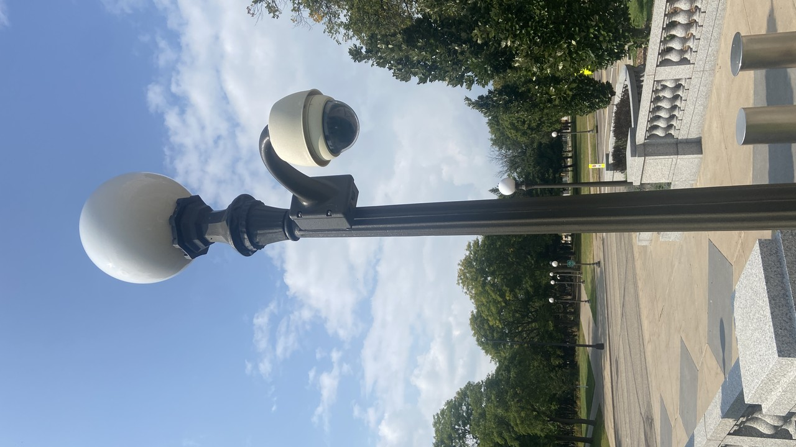
ANPR Cameras
“ANPR cameras capture vehicle number plates and convert them into searchable data.”
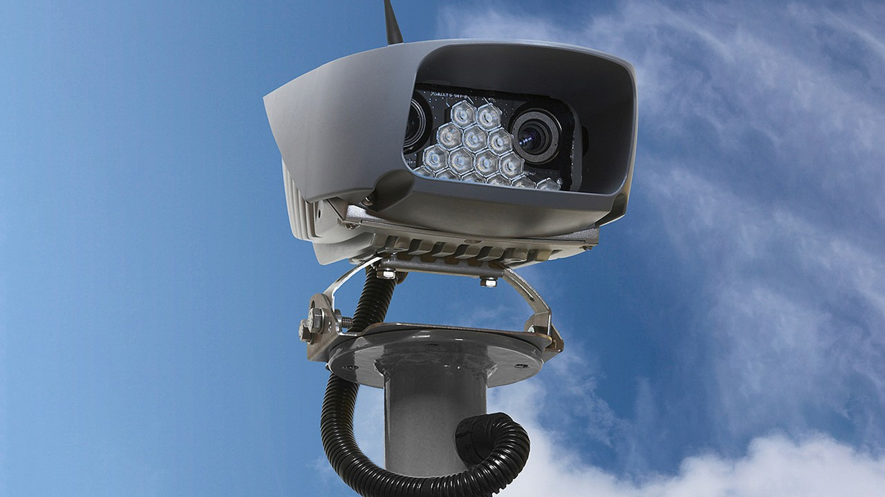
Speed Detection Cameras
“Speed detection cameras identify vehicles and estimate or measure their travel speed.”
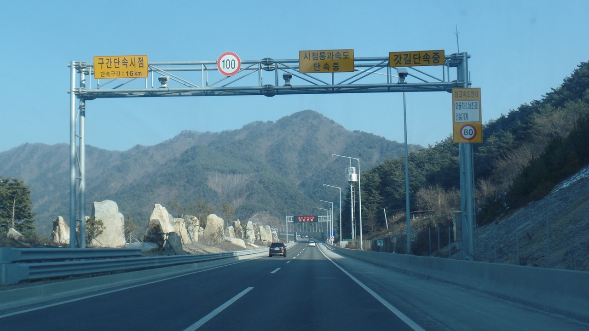
Facial Recognition Cameras, wherever authorized
“Facial recognition cameras capture standardized facial images for identity verification where legally authorized.”
Thermal Cameras, wherever required
“Thermal cameras detect heat signatures and radiation, enabling surveillance in complete darkness and adverse weather.”
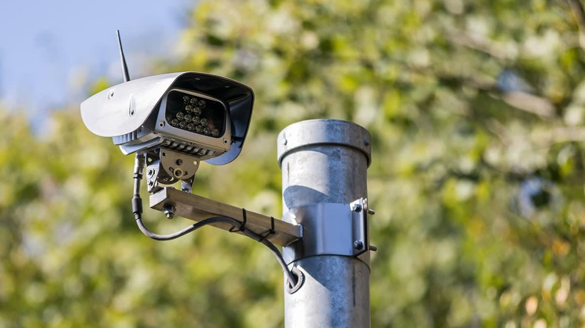
Specialized Cameras
“Specialized cameras deliver purpose-built imaging for extreme environments or unique operational requirements.”
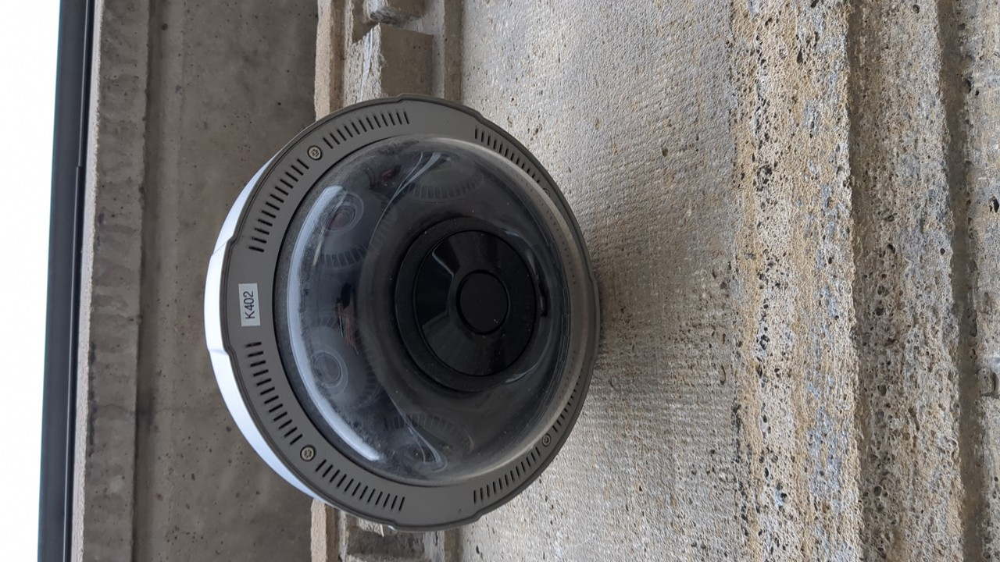
NVRs
“NVRs record and manage video streams received from network cameras.”
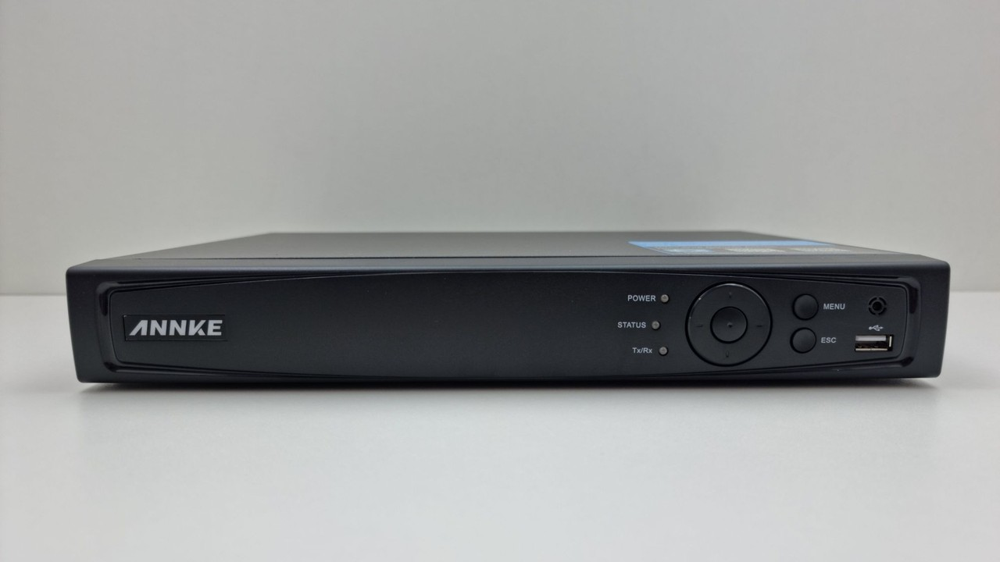
Servers
“Servers provide the computing resources required for video management, analytics, and system services.”
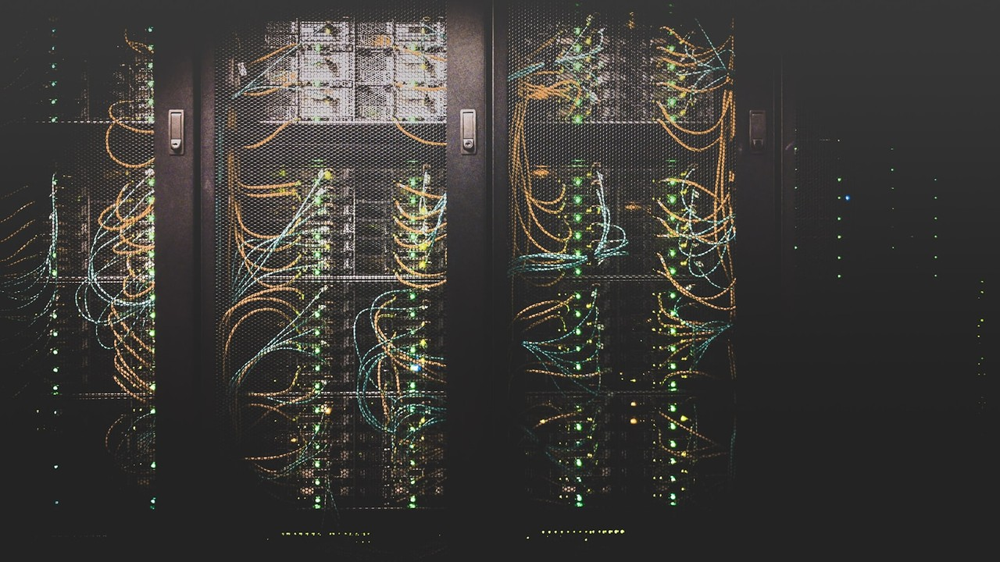
Storage
“Storage systems retain recorded video, events, images, and system data for later review.”

VMS
“A Video Management System provides the software platform used to view, record, search, and manage cameras.”
AI Analytics
“AI analytics automatically examine video to detect people, vehicles, events, and other predefined conditions.”
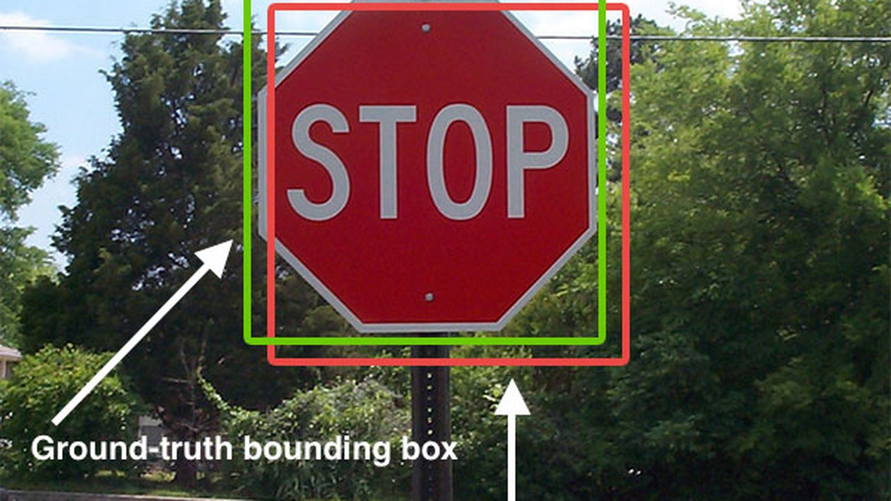
PoE Switches
“PoE switches connect network cameras while supplying power through the same Ethernet cable.”
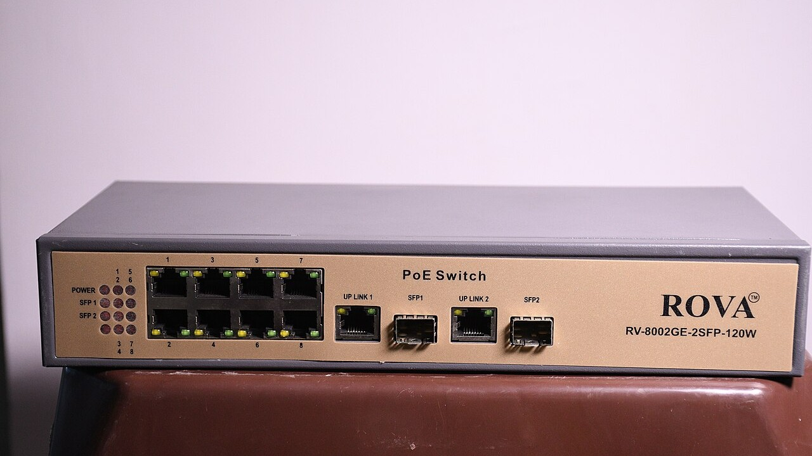
Core/Distribution Switches
“Core and distribution switches connect major parts of the surveillance network and carry high volumes of data.”
Fiber Equipment
“Fiber equipment provides long-distance, high-bandwidth network connectivity between surveillance locations.”
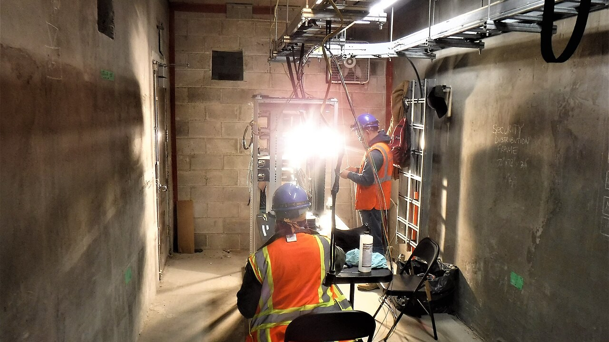
Wireless Equipment
“Wireless equipment provides network connectivity where physical cabling is difficult or impractical.”
UPS
“UPS systems provide backup power so surveillance equipment can continue operating during power interruptions.”
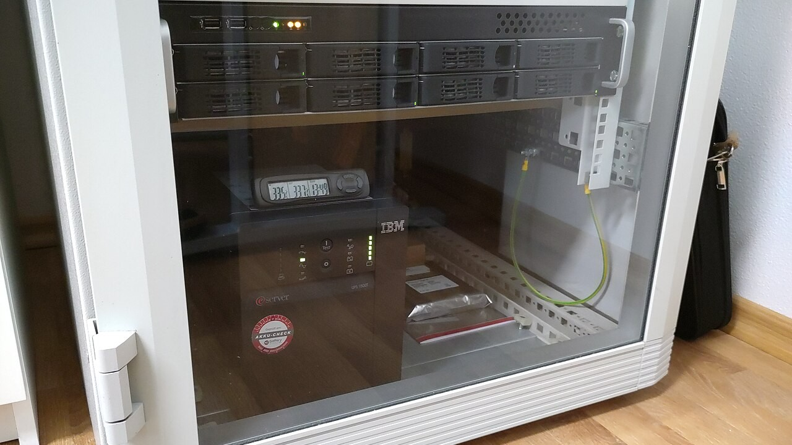
Displays
“Displays provide operators with live camera views, alarms, maps, and recorded footage.”
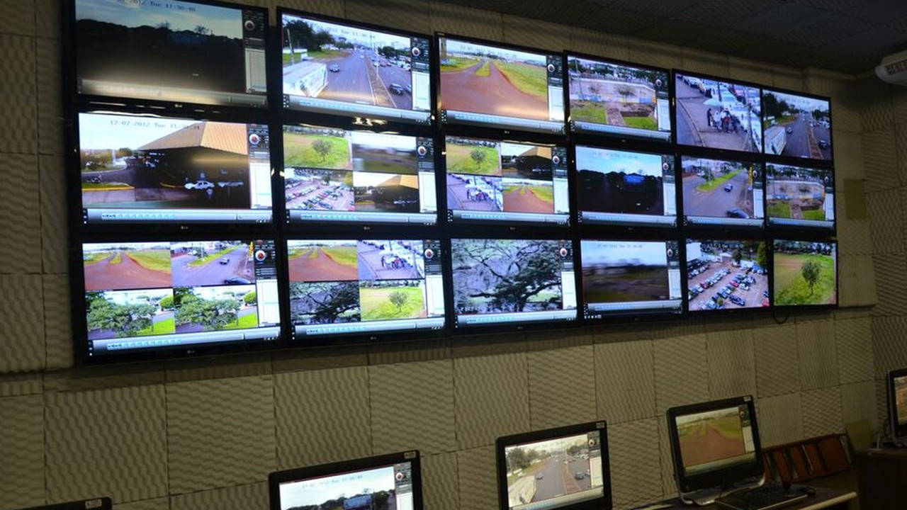
Racks
“Racks securely organize and protect servers, switches, storage, and other equipment.”
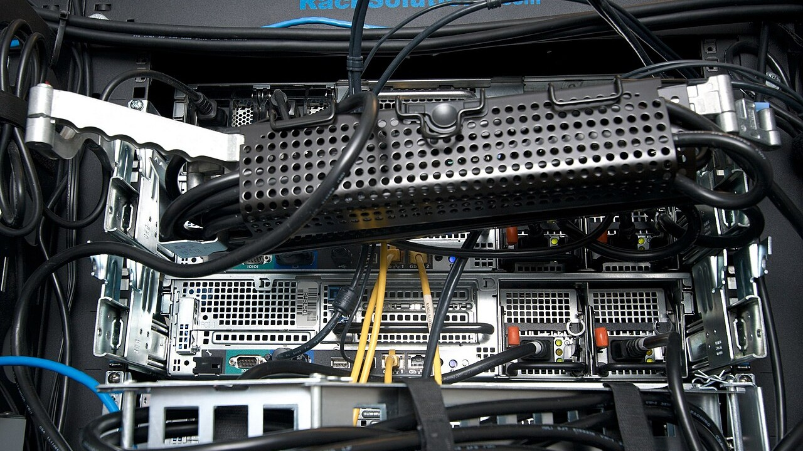
Network Equipment
“Network equipment connects and manages communication between cameras, servers, control rooms, and other systems.”
Accessories
“Accessories include the supporting hardware required to install, connect, protect, and maintain the surveillance system.”
Software
“Software provides the applications and services required to operate, manage, and monitor the surveillance platform.”
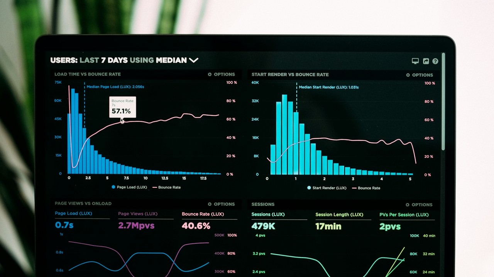
Licenses
“Licenses authorize the use of software, analytics, and system features according to deployment requirements.”
Cybersecurity Components
“Cybersecurity components protect cameras, networks, servers, and surveillance data against unauthorized access and threats.”
Hardware Infrastructure Specifications
26 Standardized Surveillance Components| # | Hardware Component | Category | Purpose | Typical System Role | Actions |
|---|---|---|---|---|---|
| 01 | Fixed Cameras | Cameras | Continuous, uninterrupted visual surveillance of a designated stationary scene, corridor, or entry portal. | Provides the foundational visual coverage layer of the surveillance system without mechanical movement. | |
| 02 | Bullet Cameras | Cameras | Long-range perimeter and perimeter boundary monitoring with visible visual deterrence. | Serves as an overt directional monitoring point along perimeters, roadways, gates, and open facilities. | |
| 03 | Dome Cameras | Cameras | Unobtrusive indoor and outdoor monitoring with high protection against physical vandalism and weather exposure. | Delivers ceiling and wall-mounted coverage in public areas, lobbies, corridors, and transit hubs. | |
| 04 | PTZ Cameras | Cameras | Active situational tracking and high-magnification optical inspection across vast open spaces. | Allows security operators and automated tracking algorithms to steer the camera toward alarms and zoom in on distant details. | |
| 05 | ANPR Cameras | Cameras | Automated license plate recognition and vehicle identification under varying vehicle speeds and ambient lighting conditions. | Monitors vehicular access points, toll gates, intersections, and parking facilities to log registration plates. | |
| 06 | Speed Detection Cameras | Cameras | Traffic speed monitoring and roadway enforcement to identify speeding infractions. | Integrates with radar, lidar, or calibrated distance sensors to measure and log vehicle velocity along transit corridors. | |
| 07 | Facial Recognition Cameras, wherever authorized | Cameras | High-accuracy facial feature capture for authorized access control and watchlist alerting. | Installed at eye-level transit chokepoints and security gates to provide optimal biometric captures for verification engines. | |
| 08 | Thermal Cameras, wherever required | Cameras | Long-range perimeter protection and temperature anomaly monitoring independent of visible light. | Detects intruders, vehicles, and fire hazards through total darkness, fog, smoke, rain, and thick foliage. | |
| 09 | Specialized Cameras | Cameras | Surveillance in hazardous environments, extreme industrial zones, or wide 360-degree panoramic overviews. | Provides explosion-proof, corrosion-resistant, fisheye panoramic, or underwater coverage in specialized operational sectors. | |
| 10 | NVRs | Compute & Video Management | Dedicated appliance-based video stream ingestion, recording, storage management, and playback. | Acts as a standalone recording hub that captures IP camera streams over the local network and provides recorded evidence retrieval. | |
| 11 | Servers | Compute & Video Management | Centralized execution of enterprise VMS services, database operations, user authentication, and AI inference workloads. | Hosts core management software, directory services, API gateways, and computational surveillance algorithms. | |
| 12 | Storage | Compute & Video Management | High-capacity, redundant long-term video retention and archival storage. | Retains recorded video and surveillance data according to the configured retention policy with RAID data protection. | |
| 13 | VMS | Compute & Video Management | Centralized command-and-control software enabling operators to monitor live feeds, configure cameras, and investigate incidents. | Unifies disparate cameras, encoders, and recording servers into a cohesive, searchable user interface. | |
| 14 | AI Analytics | Compute & Video Management | Automated video intelligence extraction that converts raw video pixels into actionable alarms and searchable metadata. | Processes live video streams to detect anomalies, line crossings, intrusions, and specific targets without requiring continuous human screen monitoring. | |
| 15 | PoE Switches | Networking & Connectivity | Edge connectivity and simultaneous transmission of data and electrical power (Power over Ethernet) to cameras. | Aggregates edge cameras in field distribution cabinets and supplies power using standard Cat6 cabling. | |
| 16 | Core/Distribution Switches | Networking & Connectivity | High-throughput backbone routing, aggregation, and traffic management between field switches and the control center. | Handles multi-gigabit video transmission across distribution layers to ensure high network reliability and low latency. | |
| 17 | Fiber Equipment | Networking & Connectivity | Immunity to electromagnetic interference and high-speed data transport over extended distances (kilometers). | Links street surveillance poles, remote substations, and zonal control rooms back to the central command facility. | |
| 18 | Wireless Equipment | Networking & Connectivity | Point-to-point and point-to-multipoint wireless radio links for camera connectivity across geographic barriers. | Transmits surveillance streams across railway crossings, open highways, water bodies, and temporary monitoring stations. | |
| 19 | UPS | Power, Control & Physical Infrastructure | Continuous electrical power conditioning and emergency battery backup during utility outages. | Prevents data corruption, system downtime, and surveillance blindness when utility electrical power fluctuates or fails. | |
| 20 | Displays | Power, Control & Physical Infrastructure | High-definition visual presentation of surveillance video matrices, interactive maps, and alarm popups. | Enables 24/7 continuous visual monitoring for control room operators via commercial surveillance monitors and large video walls. | |
| 21 | Racks | Power, Control & Physical Infrastructure | Standardized physical housing, structured cable routing, ventilation, and physical security for critical rackmount hardware. | Houses servers, NVRs, core switches, patch panels, and UPS units inside control rooms and outdoor field enclosures. | |
| 22 | Network Equipment | Networking & Connectivity | Routing, gateway interconnection, industrial protocol conversion, and physical patch distribution. | Ensures seamless packet transport, network segmentation (VLANs), and bandwidth prioritization across the surveillance ecosystem. | |
| 23 | Accessories | Power, Control & Physical Infrastructure | Physical mounting, environmental weatherproofing, surge suppression, and structural support for edge devices. | Provides mounting brackets, pole adapters, weatherproof junction boxes, conduit connections, and power supplies. | |
| 24 | Software | Software & Security | Operating system environments, system diagnostic utilities, database management systems, and client interfaces. | Enables all system processes to execute, communicate, and coordinate across the distributed hardware infrastructure. | |
| 25 | Licenses | Software & Security | Legal and functional entitlement validation for camera channels, AI features, server connections, and system expansions. | Activates specific camera channels, advanced AI analytics rules, client connections, and ongoing software maintenance. | |
| 26 | Cybersecurity Components | Software & Security | Infrastructure hardening, encrypted transmission, boundary firewalls, and vulnerability management. | Shields IP cameras from botnet attacks, enforces multi-factor authentication, audits access logs, and encrypts video at rest and in transit. |
SYSTEM ARCHITECTURE & EXECUTIVE SUMMARY
Unified 5-Tier End-to-End Surveillance Topology
Complete architectural convergence connecting edge field sensors, high-throughput transmission networks, central AI compute, and police command operations.
Optical Edge Sensing & Capture
- Fixed, Bullet & Dome Cameras
- PTZ Optical Tracking Units
- ANPR Vehicle Plate Capture
- Thermal & Multi-Sensor Units
- Two-Way Audio & Intercoms
Secure Network Transport
- Industrial Hardened Field PoE Switches
- High-Throughput Wireless PTP / PTMP
- Core & Distribution Switching Fabric
- Redundant Fiber Optical Backbone
- Dedicated VLAN Surveillance Subnets
Compute, AI & Storage
- Enterprise VMS Management Servers
- Edge & Server AI Inference Engines
- SAN / NAS Enterprise Storage Pools
- Secondary Field NVR Backup Units
- Active Video Retention Governance
Command & Police Operations
- Master City Video Wall Display Systems
- Multi-Monitor Police Consoles
- Incident Dispatch & CAD Integration
- Evidence Vault & Export Workflows
- Emergency Response Automation
Cybersecurity & Governance
- Dedicated Next-Gen Perimeter Firewalls
- Continuous Device Health Monitoring
- Controlled Firmware Patch Pipelines
- Weekly Preventive Diagnostic Audits
- Police Technical Team Custody
BUILT FOR THE LONG TERM: OPERATIONAL LAW ENFORCEMENT CUSTODY
The Pune Parliamentary Constituency CCTV Surveillance System represents a complete paradigm shift from passive recording hardware to an active cognitive public safety ecosystem. By aligning municipal civil infrastructure with police operational requirements, the deployment guarantees technological longevity, backwards compatibility, and continuous tactical value.